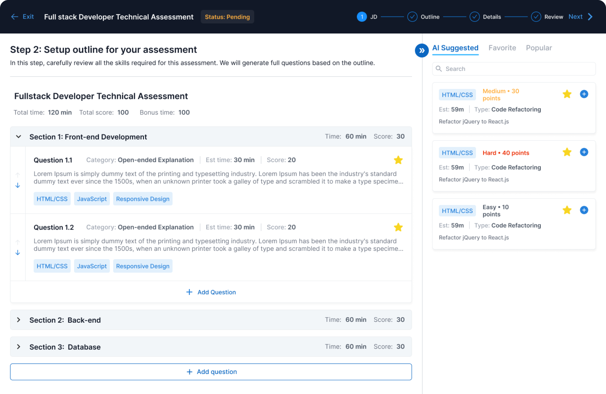

Highlight features
Based on your JD, a detailed written technical test is auto-generated by #acked in seconds
Proctoring engines enable candidates to take their tests anytime, anywhere while ensuring exam integrity
Submissions are auto-graded by #acked for you to decide whether to proceed with the candidates
In numbers
393
tests created on #acked
393
candidates have taken their tests
5.23%
number of passes / total number of completed submissions
Questions based on your industry’s context

Not only the skills but #acked also uses your industry’s context in the questions
You can edit, delete or further develop generated questions based on your needs. #acked will still be able to grade the submissions based on your finalised questions.
Hidden gems
Our efficient, large-scale and tailored testing process uncovers hidden talents at great prices that are overlooked by traditional recruitment.
Smart and effortless
No more scrambling through thousands of preset questions to put together a test. #acked does it all for you. in seconds.
100% tailored
Written technical tests to the skills requirements in your jDs. Go beyond CVs and past employer brand names to put candidates’ coding skills to test.
Price
#acked is currently in Free beta. sign up for our waitlist now to start evaluating your software engineer candidates faster, more accurately and cost effectively.
Frequently asked questions
Can’t find the answer you’re looking for?
Reach out to our customer support team
Reach out to our customer support team
What’s the cost for using #acked?
#acked is currently in free beta. Please sign up for the waitlist to try it now.
How long will the waitlist take?
We are currently in beta with limited capacity to ensure smooth experience for users. We will increase our capacity when #acked is ready.
Can multiple users from my organisation join #acked?
Yes, all users from the same organisation will manage the same workspace.
What is the test-taking environment for candidates like?
Similar to other technical test platforms, #acked enables candidates to view and complete their tests completely within #acked. In the exam settings, you can decide whether they can access external resources or need to turn on their webcams during their exams. As of now, we don’t support running code on #acked as the skills required in JDs are vast so, the generated questions may require importing libraries that we don’t support.